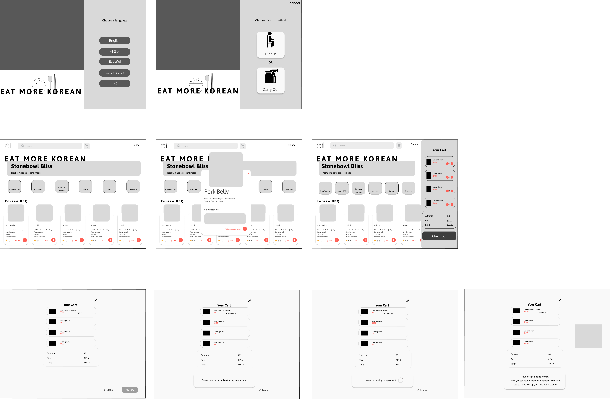
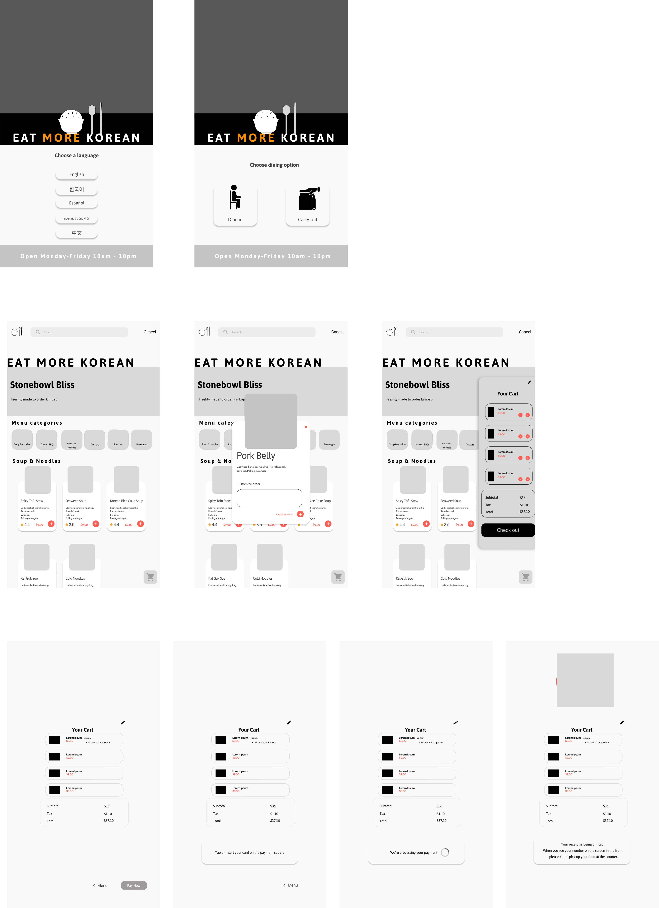
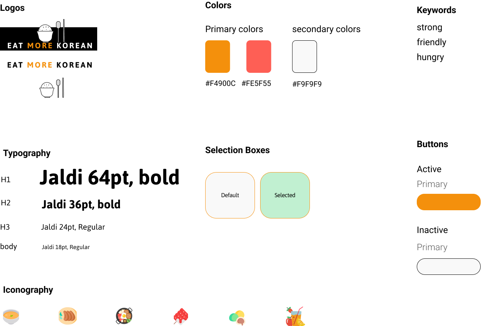
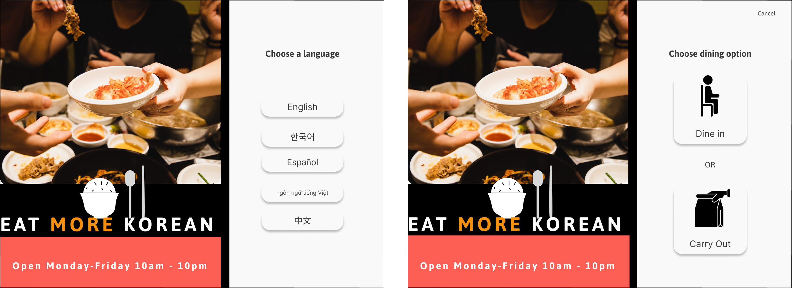
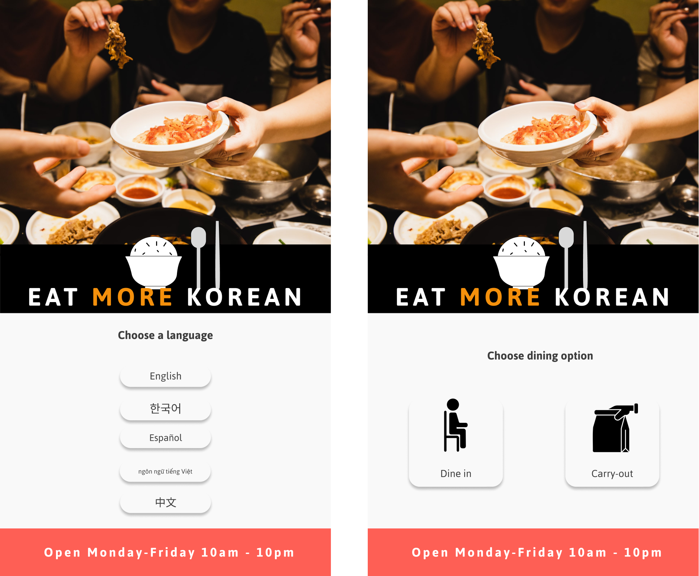
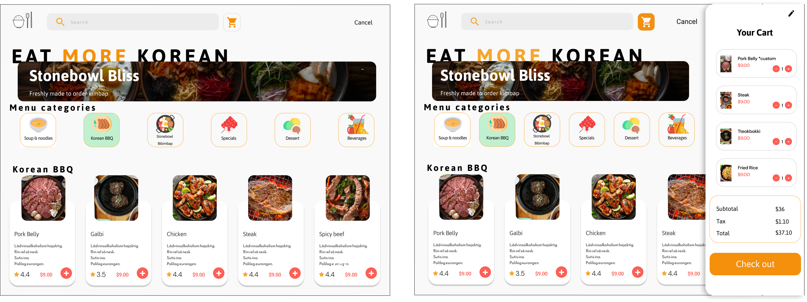
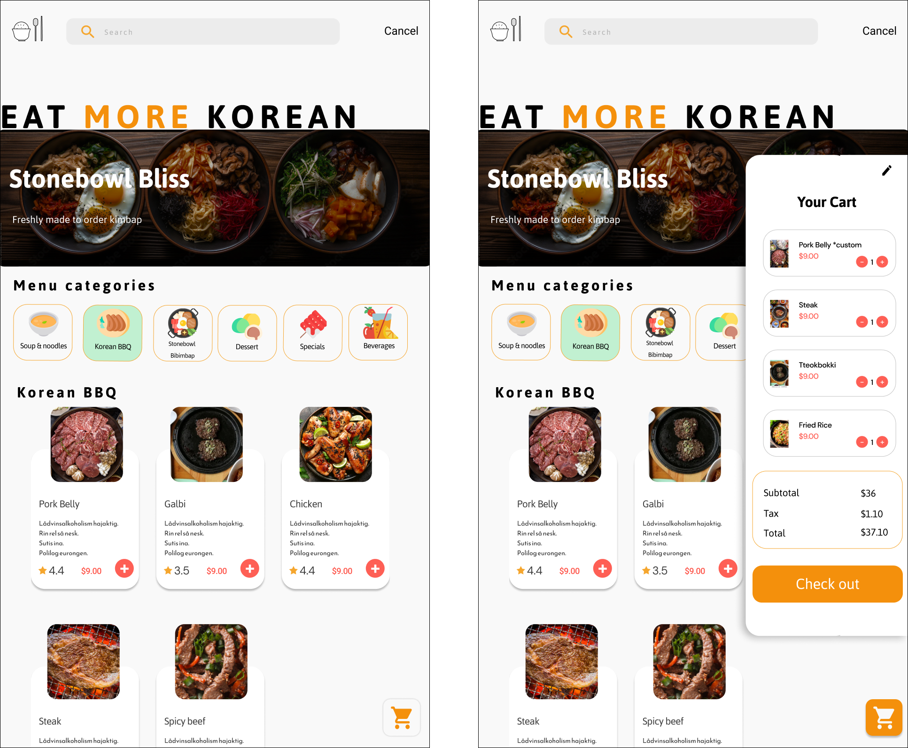
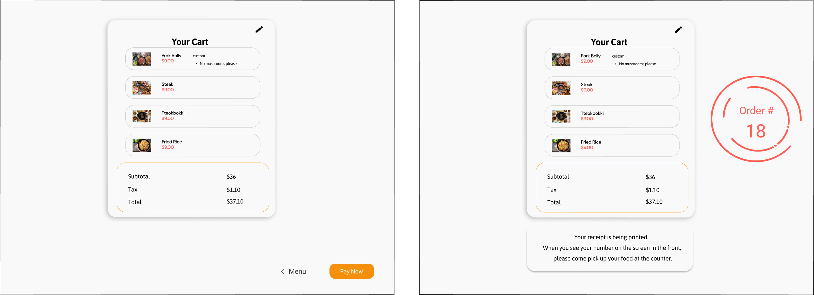
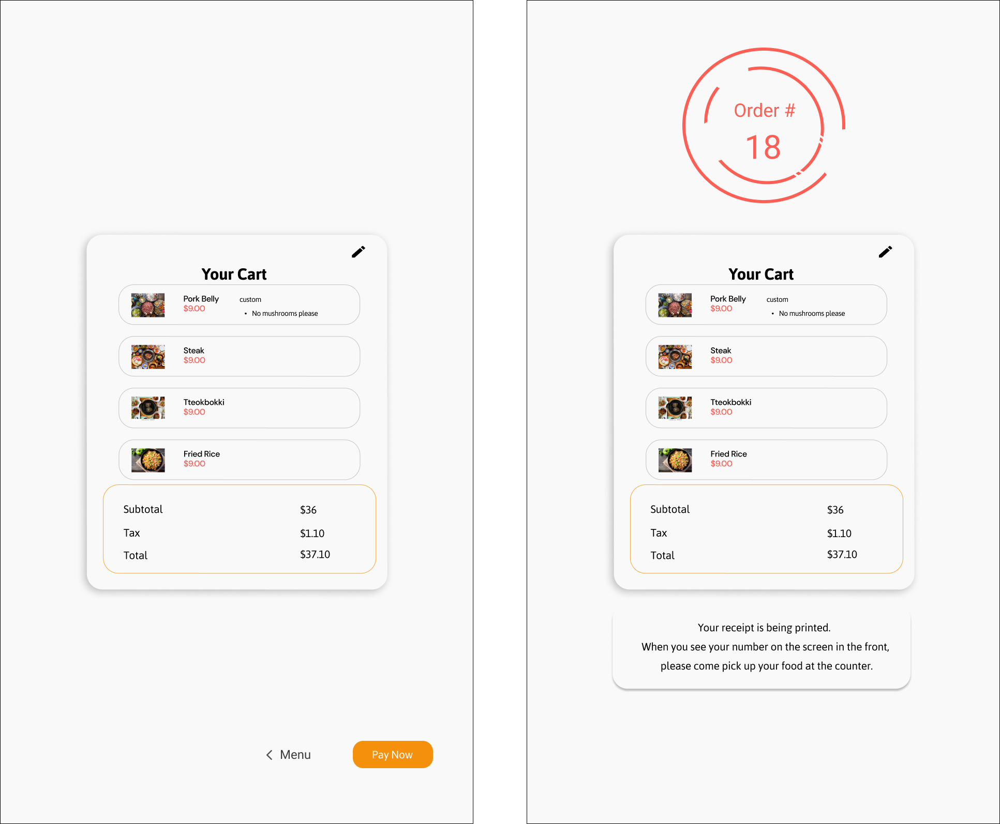

Eat More Korean
The Idea
An Atlanta based eatery with chefs from Korea, pride themselves in offering superb quality for delicious prices. I created a Kiosk app for customers of different language backgrounds to ease the process of ordering authentic Korean food.
The Audience
13-60
The User Problem
Many users that frequent the Eat More Korean restaurant come from different language backgrounds due to the area composition and the store location being inside an international market. The store uses a menu board that is written only in English and Korean with no description of what the meals consists of. Because of this, some customers may feel exclusion and have a misunderstanding of what is on the menu due to the language barrier.
The Project
This project was inspired from my Korean 2002 class.
Role: UX Researcher/Designer
Timeline: 18 weeks
UX Tools: Figma
Front-End tools: HTML, CSS, Javascript
Design Process

1. Discover & Research
User Surveys
Goal
To collect 10 complemented 6-question user survey to discover the demographic of Eat More Korean's consumer base
Process
- Surveys distributed at peak hour for the duration of two days inside of the Eat More Korean restaurant.
- Questions were crafted to guide interview questions.
- Based on the surveys and interviews of the 10 participants, I created an Affinity map.
Questions on survey (written in Spanish, English, and Korean)
- What is your age?
- What is your nationality?
- Can you read Korean?
- Do you depend on the English translations of a food item to choose your meal?
- How do you benefit from the use of the Korean language at Eat More Korean?
- Is the Eat More Korean menu written in your native language?
User Interviews
Goal
Conduct face to face interviews to identify if creating a multilingual menu is beneficial to the business
Process
- Questions were crafted to verify pain points and highlights of the current menu.
- Those that answered "No" to "Is the Eat More Korean menu written in your native language?" on the survey was asked to be interviewed.
- I figured if the participants answered "no" to the last question their reading ability is functional enough to order. However, I can find some answers on how to improve the menu ultimately, improving customer experience.
- Based on the interview, I created an affinity map to find trends and insights.
Questions asked:
- What is your native language?
- Would you find it easier to order if the menu was written in your native language?
- Can you describe your process of ordering at Eat More Korean?
- If you have a family member that isn't fluent in English, do you believe it would be difficult for them to order at Eat More Korean? Why?
- Would incorporating multiple languages increase how much you come and buy at Eat More Korean?
2. Synthesis Research
Affinity Map
Find trends and insights.
Method
By grouping notes that were taken during interviews and responses on surveys, trends and insights become visible: motivations, goals, common pain points and needs.
3. Design Strategy
Define the problem.
Problem Statement
Individuals from different language backgrounds find it difficult to read, speak, and translate the two languages that the Eat More Korean menu is written in.
User goals
What can I do to address the problem?
Create a kiosk app that eliminates the issue of miscommunication in turn making the process of ordering more efficient.
Information architecture
3 participants complemented an open cart sort
This open card sort helped me generate ideas on how to organize content based on how the participants classify in their minds.
I explained to the participants that they had to name each category and organize the cards into the categories they felt was most appropriate.
User Flow
Lay out the skeleton of the app.
The goal
To communicate the intended flow of a user through various pages and actions in an app.
4. Prototyping
Developing software for custom hardware is a vastly different process compared to creating software for desktop or mobile platforms that are mass-produced for personal use. Custom hardware requires software that is tailored to the specific hardware and its unique interaction and navigation patterns. Hardware peripherals, even if similar in function such as a card reader or receipt printer, will have distinctive physical appearances and locations that require special attention when designing software for them. In contrast to mass-produced hardware from industry leaders like Apple and Samsung, custom hardware is likely to have lower production quality. This may result in a subpar user experience due to factors such as poor touch sensitivity and extended hardware production lead times.
Ipad Ideation
In addition to the financial challenges that non-global franchise restaurants often face, I decided to create a prototype for the iPad Pro 12.9" interface, which is widely accessible and familiar to a large user base. The iPad Pro 12.9" is a popular device used for order-taking in many franchises, making it an obvious choice to include in the design. Given that many people are already familiar with the iPad Pro 12.9" interface, designing a user-friendly prototype for this hardware makes it easier for restaurant staff and customers to navigate the interface seamlessly. With the growing importance of technology in the food industry, providing a user-friendly interface can significantly enhance the overall customer experience.
Kiosk Ideation
In case the company wishes to have a personalized kiosk similar to larger franchises, I have created an alternative kiosk prototype that utilizes a screen size of 916px width and 1594px height.
Wireframes.
This wireframe helps me focus on the functionality of the app while not losing sight of the app interface.
Sketches for a single order flow
Ipad
Custom Kiosk
Logo & Branding
High-Fidelity Designs
User preferences
 Food selection
 Payment process
 Interactive prototype.
Interact with the Eat More Korean Kiosk App on Figma!
5. Usability testing
Usability testing.
Testing with Users (Ipad)
Scenerio 1
Imagine you're at the Eat More Korean restaurant and you are unable to speak or read the English language or Korean language. Therefore, you use the kiosk to order what you would like to eat.
Questions
- What behavior did you expect from the option you chose for method of pick-up?
- How did you find completing this task?
- How would you feel using this kiosk at Eat More Korean?
- Would you be willing to use this kiosk app to order your food?
- What about this kiosk app did you find enjoyable?
- Was there anything that confused you on the app?

Scenerio 2
Imagine that you're in a rush to order at Eat More Korean and your unable to speak the English or Korean language
Questions
- How would you find completing this task in a hurry?
- Would you consider using the kiosk to order food when in a hurry?
- Was the process of ordering long? If so, what could have shortened the process?
Scenerio 3
Imagine you're ordering for your family those of which could not speak English or Korean.
Questions
- As your family's translator, would this kiosk app be of help in the ordering process?
Usability Testing Outtakes.
Learning and future iterations
What went well
- Users liked the easy flow. The behaviors they saw were expected
- Users liked the pictures that identified their foods.
What went wrong
- The idea of adding your phone number when you recieve you ticket number to notify you that your food is ready.
- Add more screens to test all the possibilities for menu items
Next Steps
Improvements to consider

Conclusion
Learning and general thoughts
Being that this is my first UX case study, the process of the project has enlightened the way I conduct research on populations that are culturally different than my own. The preconcieved thoughts I had were made clear to me and thrown away with other biases I had. This allowed for me to conduct research and design with my target users in mind, which were those who have deal with a language barrier while interacting with others through an activity such as ordering that native English or Korean speakers take for granted in spaces that cater towards those two demographics.
Although my kiosk design was catered towards those who dealt with language barriers, the kiosk would also be of help to someone with a mental health condition such as social anxiety. The benefits of the kiosk goes far beyond language barriers.